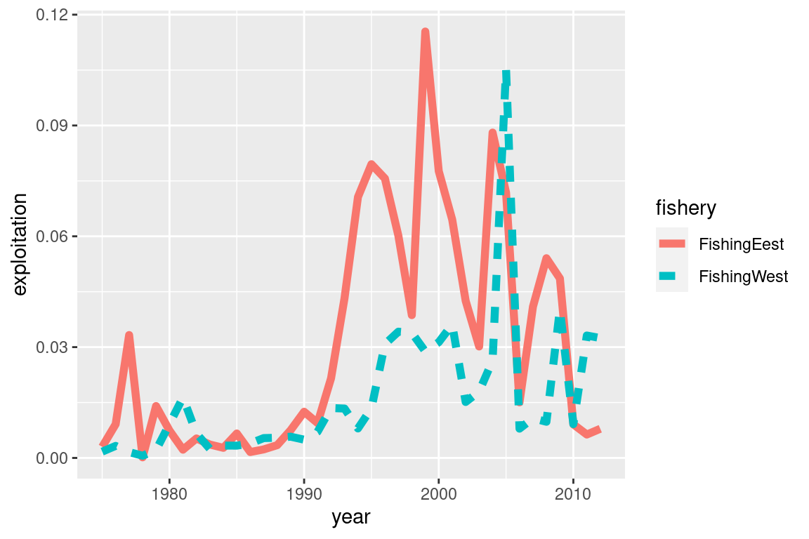
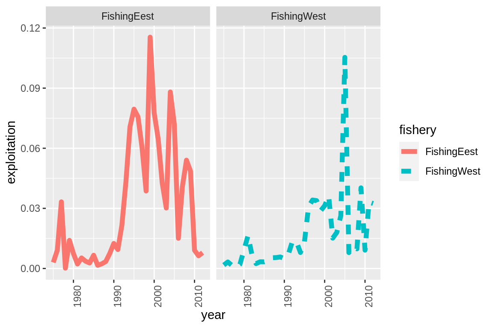
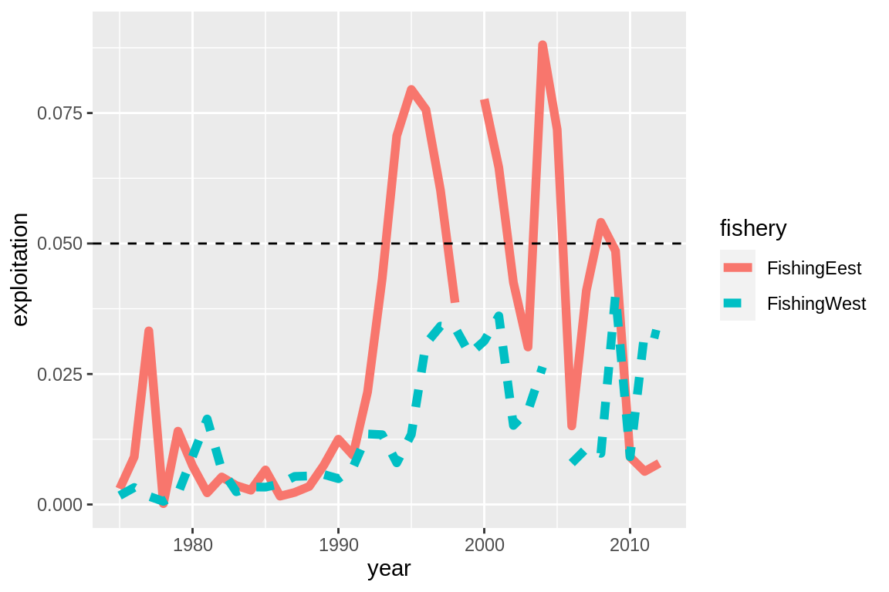
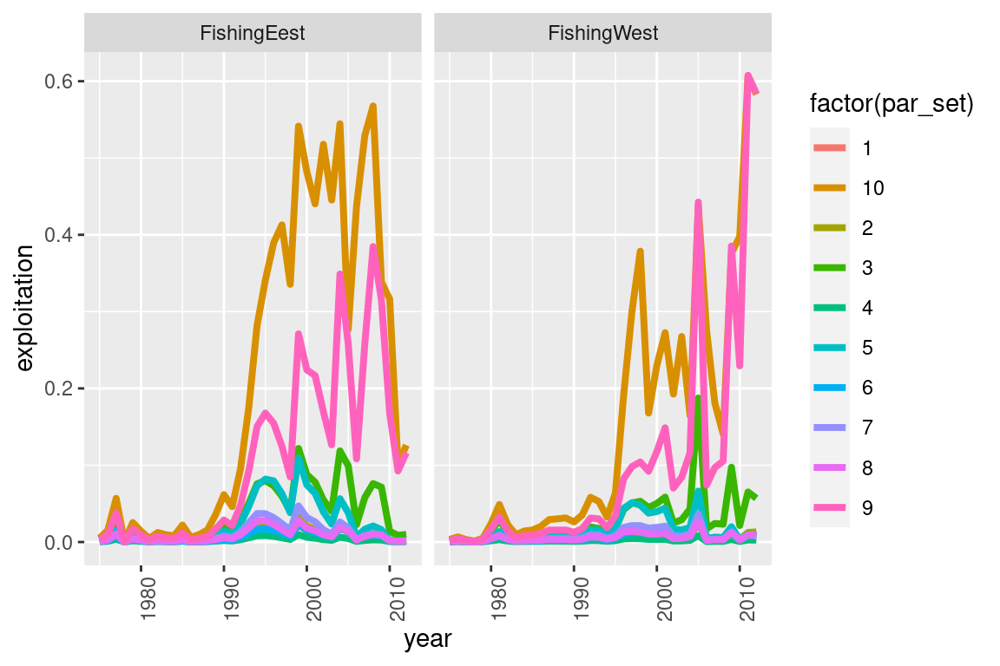
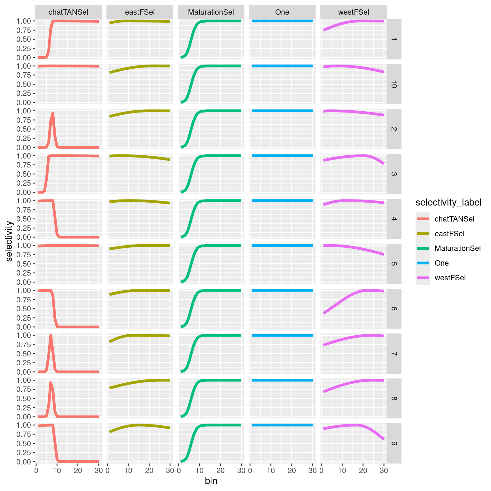
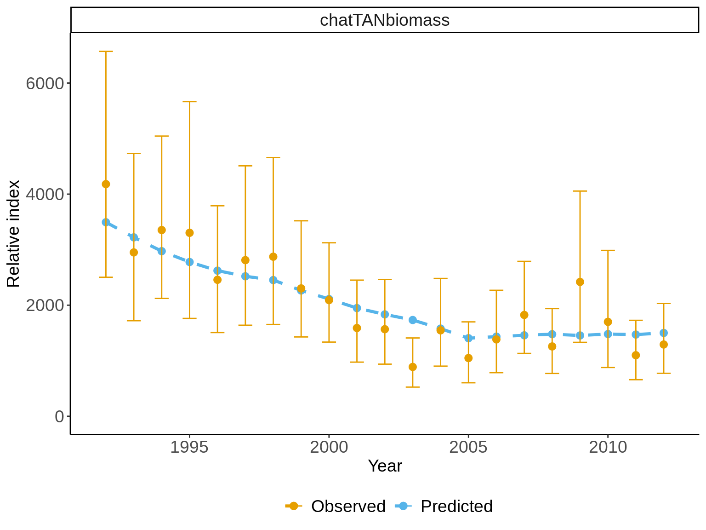

Chapter 4 MPD summaries
4.1 Single Model Output
file_name = system.file("extdata","SimpleTestModel",
"estimate.log", package = "r4Casal2", mustWork = TRUE)
mpd = extract.mpd(file = file_name)4.1.1 Model Convergence
There are a range of appproaches for checking your model has converged. The approaches we will be working through include checking the hessian is positive definite, checking parameters are not running to bounds and reestimate with random starting locations.
When estimating models in Casal2, it is recommended to have the following report included
@report covariance_matrix
type covariance_matrix
## or the Hessian
@report hessian_matrix
type hessian_matrixWhen estimation is complete and you have read in the Casal2 output using Casal2::extract.mpd().
# file name
mpd_file_name = system.file("extdata", "PosteriorPredictiveChecks","estimate.log",
package = "r4Casal2", mustWork = TRUE)
# read in output
mpd = extract.mpd(file = mpd_file_name)
# is covariance symetric
isSymmetric(mpd$covar$covariance_matrix)
# is hessian invertable
is_matrix_invertable(mpd$hess$hessian_matrix)Once these are satisfied you will have more confidence in your standard errors, in addition to being able to run MCMC run mode.
Another useful convergence diagnostic is re-estimating Casal2 at difference starting locations. The function used for this is ?generate.starting.pars. This will read a Casal2 config file that contains all the @estimate definitions are generate a bunch of random starting values in the format of useable for -i in Casal2.
4.1.2 Data Weighting
Some pseudo r code to help with data weighting according to Francis (2011) with multinomial data.
#'
#' This is an example which includes some R-code that will apply Francis Method TA 1.8 method
#' and automatically update a Casal2 estimation file
library(Casal2)
library(r4Casal2)
library(ggplot2)
library(dplyr)
csl_dir = normalizePath(file.path("misc", "AutomateDataWeighting","csls"))
mpd = extract.mpd(file = "estimate.log", path = csl_dir)
obs_csl2 = extract.csl2.file(file = "Observation.csl2", path = csl_dir)
names(mpd)
## comp labels
comp_labels = c("chatTANage", "chatOBSwst", "chatOBSest")
## check weights
max_tolerance = abs(1 - Method.TA1.8(model = mpd, observation_labels = comp_labels, plot.it = F))
# Before running this it always pays to save a copy of the original Observation.csl2
# incase an error occurs and deletes the file or something silly
## run this line of code
if(FALSE)
file.copy(from = file.path(csl_dir, "Observation.csl2"),
to = file.path(csl_dir, "Observation_original.csl2"))
# first run an estimation
current_dir = getwd()
setwd(csl_dir)
system2(command = "casal2", args = "-e", stdout = paste0("estimate_",0,".log"), stderr = "estimate.err")
setwd(current_dir)
# to be even more sure, it pays to change the config.csl2 to work off !include with a different file.
weighting_iterator = 1;
weighted_mpds = list()
while(max_tolerance > 0.01) {
cat("weighting loop index = ", weighting_iterator, " max tolerance = ", max_tolerance, "\n");
## change observation.csl2
obs_csl2 = extract.csl2.file(file = "Observation.csl2", path = csl_dir, quiet = T)
# read in mpd
mpd = extract.mpd(file = paste0("estimate_",weighting_iterator - 1,".log"), path = csl_dir)
weighted_mpds[[as.character(round(max_tolerance,3))]] = mpd
vals = vector();
## loop over each comp data set and weight individually
for(comp_ndx in 1:length(comp_labels)) {
# calculate weight
weight = Method.TA1.8(model = mpd, observation_labels = comp_labels[comp_ndx], plot.it = F)
# get the obs input file
vals[comp_ndx] = weight
this_obs = obs_csl2[[paste0("observation[",comp_labels[comp_ndx],"]")]]
# change the subcommand 'error_value_multiplier'
if(is.null(this_obs$error_value_multiplier)) {
this_obs$error_value_multiplier = list()
this_obs$error_value_multiplier$value = 10
} else {
this_obs$error_value_multiplier$value = 10
}
# the francis method wants weight = 1.0
# check if the tolerance approx = 1
if(abs(1 - weight) > max_tolerance)
max_tolerance = abs(1 - weight)
# save the observation back into the overall config
obs_csl2[[paste0("observation[",comp_labels[comp_ndx],"]")]] = this_obs
}
## priny the weights
cat(comp_labels, "\n")
cat(round(vals,5), "\n")
## write the file
## Note!! this will overwrite 'Observation.csl2' it will strip out all comments as well
write.csl2.file(obs_csl2, file = "Observation.csl2", path = csl_dir)
## estimate the model with Casal2
current_dir = getwd()
setwd(csl_dir)
system2(command = "casal2", args = "-e", stdout = paste0("estimate_",weighting_iterator,".log"),
stderr = "estimate.err")
setwd(current_dir)
weighting_iterator = weighting_iterator + 1
}4.1.3 Model quantities
Fishing Pressures
Below illustrates code to plot fishing pressure, but you can also easily adapt the code to plot catches. One thing to note, is Casal2 will report both exploitation_rate and fishing_pressures. For models that only have a single fishery per time-step or area these will be the same. If there are multiple fisheries interacting with the partition then they will differ. Fishing pressure is the maximum exploitation applied to the partition for that time-step and area. See the user manual for more detail on the difference. exploitation_rate reported is just
\[
\frac{catch}{vunerable}
\]
Some R-code used to summarise fishing pressures.
file_name = system.file("extdata", "SimpleTestModel", "estimate.log",
package = "r4Casal2", mustWork = TRUE)
mpd = extract.mpd(file = file_name)
# Report labels
# names(mpd)
# plot fishing pressures
fishery_info = get_fisheries(mpd)
head(fishery_info)
# Note this will print both fishing pressure and exploitation
my_plot = ggplot(fishery_info, aes(x = year, y = exploitation, col = fishery, linetype = fishery)) +
geom_line(size =2)
my_plot Flexibility using standard ggplot functions
# you can add adjust it as you please, for example if you want 3 panels for each fishery
my_plot +
facet_wrap(~fishery) +
theme(axis.text.x = element_text(angle = 90))
# Adjust ylim and add a reference limit
my_plot + ylim(0,0.09) + geom_hline(yintercept = 0.05, linetype = "dashed")
4.2 Multiple Casal2 runs with -i or -s
file_name = system.file("extdata", "SimpleTestModel","multi_run.log",
package = "r4Casal2", mustWork = TRUE)
mpd = extract.mpd(file = file_name)
# Report labels
# names(mpd)
# plot fishing pressures
fishery_df = get_fisheries(model = mpd)
my_plot = ggplot(fishery_df, aes(x = year, y = exploitation, col = factor(par_set))) +
geom_line(size = 1.4) +
facet_wrap(~fishery)
my_plot = my_plot + theme(axis.text.x = element_text(angle = 90))
# this will generate a generic ggplot
print(my_plot)
Plotting selectivities
selectivity_df = get_selectivities(mpd)
selectivity_df$par_set = factor(selectivity_df$par_set, ordered = T)
ggplot(selectivity_df, aes(x = bin, y = selectivity, col = report_label, line_type = par_set)) +
geom_line(size = 1.5) +
facet_grid(par_set~report_label)
Plotting Fits
my_plot = plot_relative_index(model = mpd, report_labels = c("chatTANbiomass"), plot.it = T, plot_type = "classic")## [1] "multi iteration report found"
## [1] "multi iteration report found"
## [1] "multi iteration report found"
## [1] "multi iteration report found"
## [1] "multi iteration report found"
## [1] "multi iteration report found"
## [1] "multi iteration report found"
## [1] "multi iteration report found"
## [1] "multi iteration report found"
## [1] "multi iteration report found"
## [1] "multi iteration report found"
## [1] "multi iteration report found"
## [1] "multi iteration report found"
## [1] "multi iteration report found"
## [1] "multi iteration report found"
## [1] "multi iteration report found"
## [1] "multi iteration report found"my_plot